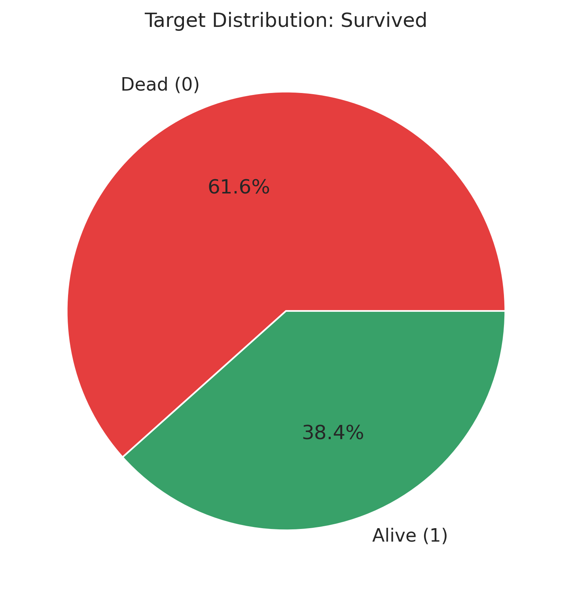
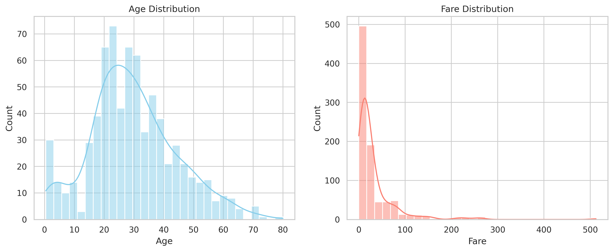
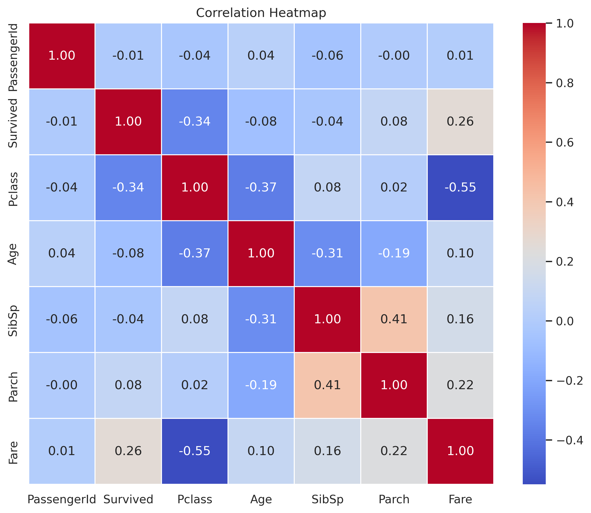
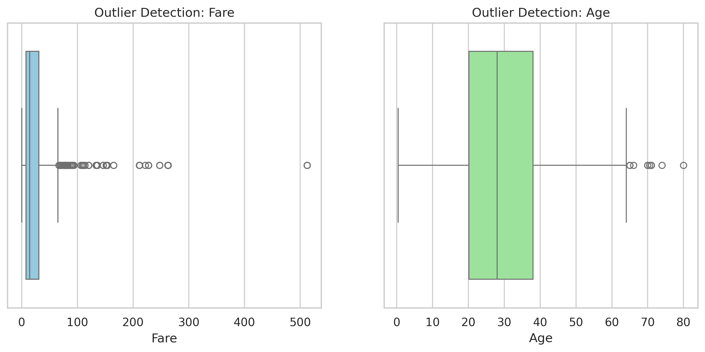
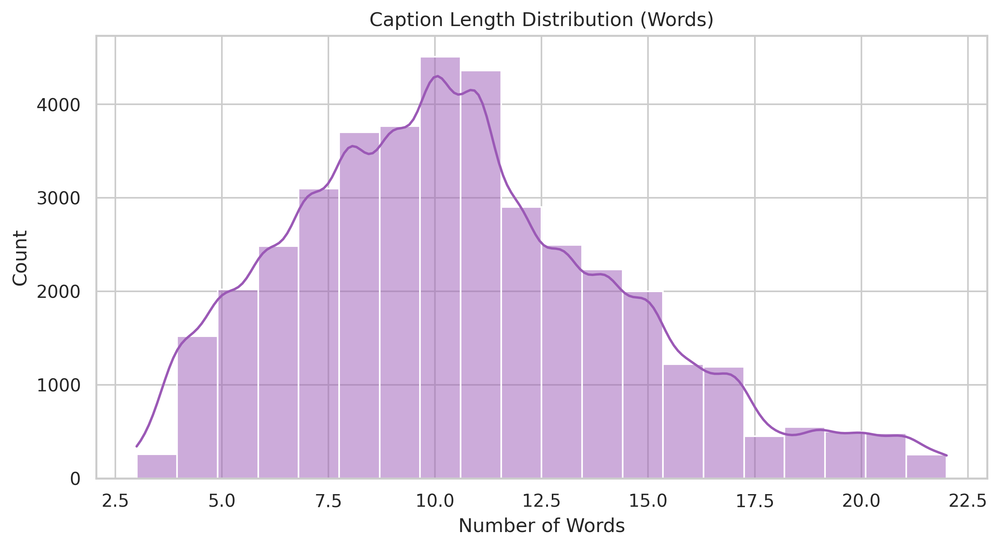
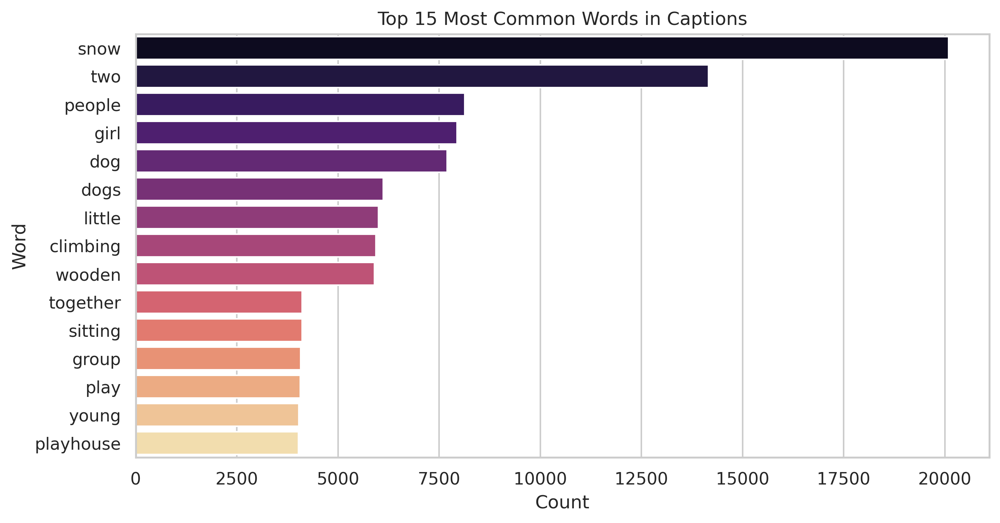
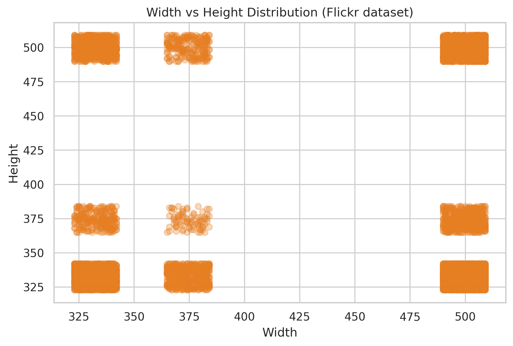
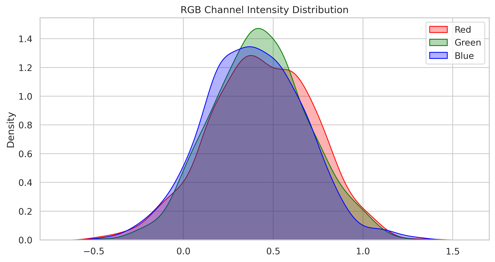

Exploratory Data Analysis
Programming for AI & Data Science (CO3135)
Instructor: Dr. Thanh-Sach LE
Team Members
Trần Phan Đăng Khôi
ID: 2352626
Trương Anh Phan
ID: 2352881
Programming for AI & Data Science (CO3135)
Instructor: Dr. Thanh-Sach LE
ID: 2352626
ID: 2352881
Titanic Dataset: Missing data handling and survival correlation analysis.
Samples
Features




SMS Spam Analysis: Preprocessing, Length and TF-IDF analysis.
Messages
Avg Words


CIFAR-10 Dataset: RGB distributions and quality metrics.
Images
Classes


Flickr8k: Relationship between images and descriptive captions.
Unique Images
Captions / Image



